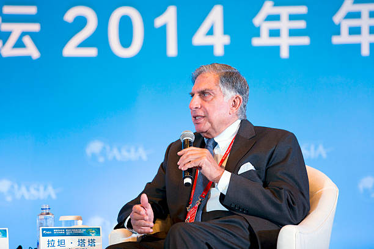

RATAN TATA SIR
" Indian industrialist" , "Man with golden heart "

RATAN TATA SIR
Here's a time-line of his Life..
A very simple person who lived an unpretentious lifestyle. He had a keen interest in literature and wrote poems. He never married. He always faced media himself for his failures while let others address for the success.
- 1937Born in Bombay, now Mumbai, during the British Raj.
- 1955Graduated from Riverdale Country School in New York City.
- 1959He then received a degree in Architecture from Cornell University.
- 1970Promoted to management during the 1970s, Ratan achieved initial success by turning Group company National Radio and Electronics (NELCO) .
- 1975 Attended the seven-week Advanced Management Program of Harvard Business School — an institution which he has since endowed.
- 2008President Pratibha Patil presenting the Padma Vibhushan to Ratan Tata, at the Rashtrapati Bhavan.
- 2010Honorary Doctor of Law.
- 2013 He was appointed to the Board of Trustees of the Carnegie Endowment for International Peace.
- 2015 Ratan took an advisory role at Kalari Capital, a venture capital firm founded by Vani Kola.